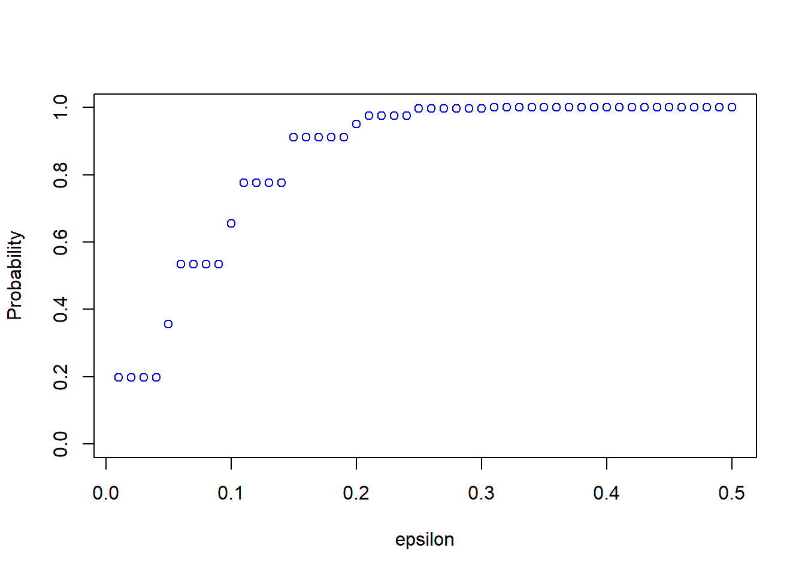
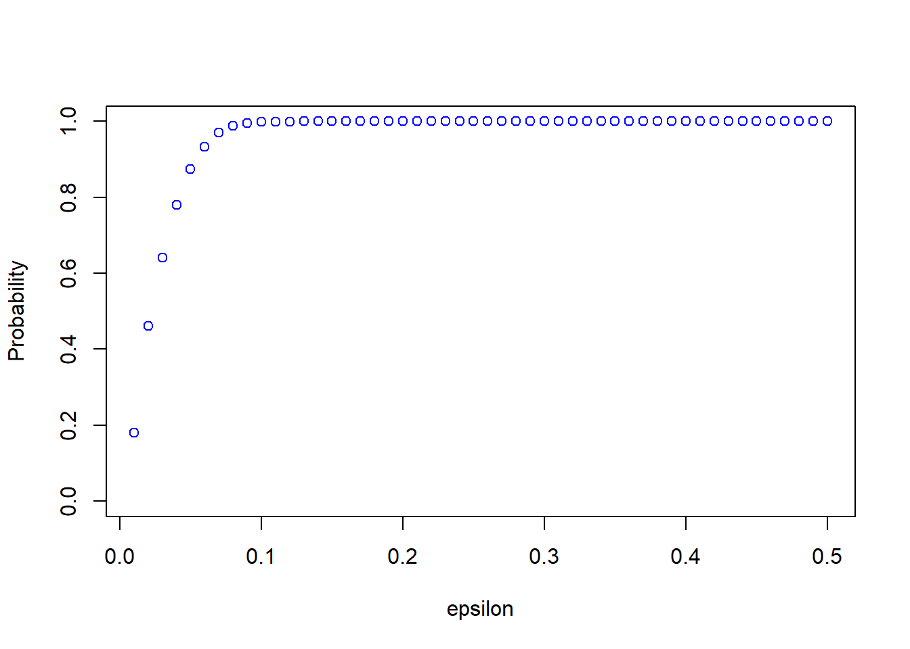
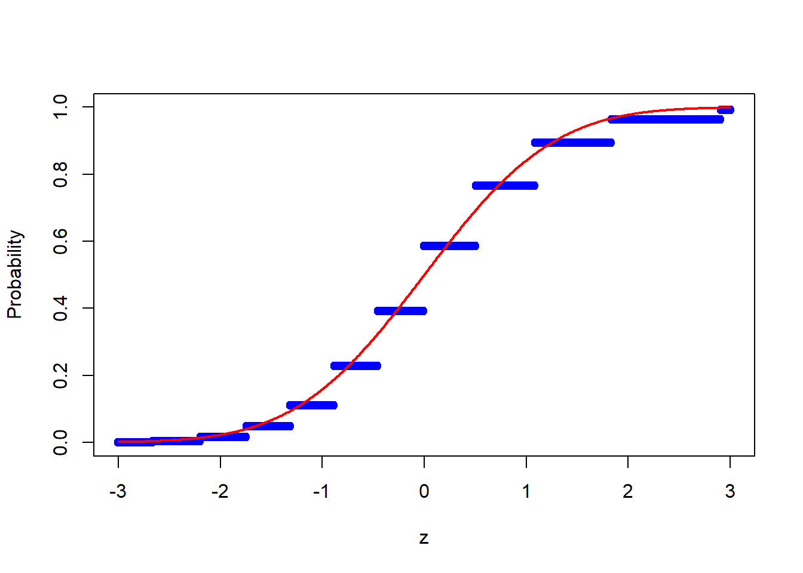
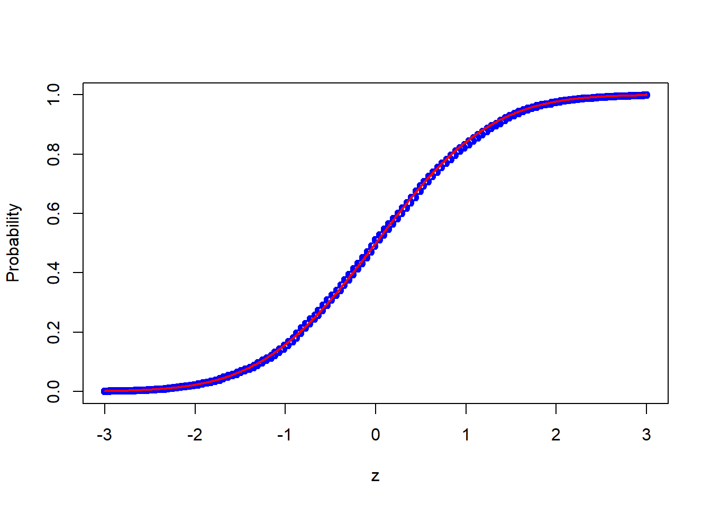
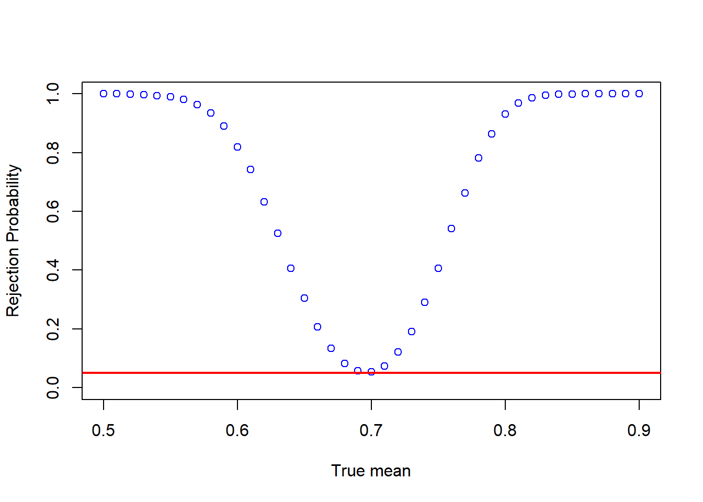

6 Monte Carlo simulations
6.1 Some important concepts
We will spend a lot of time learning about statistical properties of estimators. To be precise, let \(\hat{\theta}_n\) be an estimator of a parameter \(\theta\). The estimator is a functions of the sample, say \(\{X_1, X_2, \ldots, X_n\}\). The sample consists of random variables and any function of the sample, including \(\hat{\theta}_n\), is a random variable as well. That is, for different realizations of the data, we get different realizations of the estimator.
These arguments can be confusing because in practice we typically only have one data set and therefore only one realization of the estimator. But we could also think of all the other realizations of the data we could have obtained. For example, consider your starting salary after graduation. Let \(\theta\) be the expected starting salary, which is a fixed number that we do not know. After everyone started working and we see your actual starting salaries, we can calculate the sample average as an estimate of the expected value, but this estimate is just one potential realization. If things had turned out slightly different, your starting salaries might have been different and we would have seen a different realization of the estimator.
Since an estimator is a random variable, it has a distribution and (typically) a mean and a variance. We call an estimator unbiased if \[E\left(\hat{\theta}_n\right) = \theta\] That is, the average value of the estimator over all the hypothetical data sets we could have obtained is equal to \(\theta\). Unbiasedness can hold for any sample size \(n\) and is therefore called a small-sample property. Unbiasedness does not imply that \(\hat{\theta}_n\) is necessarily close to \(\theta\).
We will define what it means for an estimator to be consistent: \[\hat{\theta}_n \rightarrow_P \theta\] and asymptotically normally distributed: \[\sqrt{n}\left(\hat{\theta}_n - \theta \right) \rightarrow_D N(0,V_{\theta}^2) \] These properties only hold in the limit and are called large-sample properties. Knowing the large-sample distribution is particularly useful because it allows us to test hypotheses and obtain confidence intervals. For example, let \(\hat{V}_{\theta}\) be a consistent estimator of \(V_{\theta}\). Then \[P\left( \theta \in \left[ \hat{\theta}_n - 1.96\frac{\hat{V}_{\theta}}{\sqrt{n}} , \, \hat{\theta}_n + 1.96\frac{\hat{V}_{\theta}}{\sqrt{n}} \right] \right) \rightarrow 0.95\] and the interval \[\left[ \hat{\theta}_n - 1.96\frac{\hat{V}_{\theta}}{\sqrt{n}} , \, \hat{\theta}_n + 1.96\frac{\hat{V}_{\theta}}{\sqrt{n}} \right]\] is a \(95\%\) confidence interval for \(\theta\). That is, looking at all hypothetical data sets, \(\theta\) is in \(95\%\) of the confidence intervals. Notice that in different data sets, we get different intervals, but the parameter \(\theta\) does not change.
The \(95\%\) coverage probability only holds in the limit, but for any fixed sample size \[P\left( \theta \in \left[ \hat{\theta}_n - 1.96\frac{\hat{V}_{\theta}}{\sqrt{n}} , \, \hat{\theta}_n + 1.96\frac{\hat{V}_{\theta}}{\sqrt{n}} \right] \right) \] could be much smaller than \(95\%\). This actual coverage probability is unknown in applications.
The goal of Monte Carlo simulations is typically to investigate small sample properties of estimators, such as the actual coverage probability of confidence intervals for fixed \(n\). To do so, we can simulate many random samples from an underlying distribution and obtain the realization of the estimator for each sample. We can then use the realizations to approximate the actual small sample distribution of the estimator and check properties, such as coverage probabilities of confidence intervals. Of course, the properties of the estimator depend on which underlying distribution we sample from.
6.2 Simple simulation example
As a simple example, let \(\{X_1, X_2, \ldots, X_n\}\) be a random sample from some distribution \(F_X\). Define \(\theta = E(X)\) and let \[\hat{\theta}_n = \bar{X}_n = \frac1n \sum_{i=1}^n X_i\] and \[s_n = \sqrt{\frac{1}{n-1} \sum_{i=1}^n \left(X_i - \bar{X}_n\right)^2} \] Applications of a Law of Large Numbers and a Central Limit Theorem for iid data imply that \[\hat{\theta}_n \rightarrow_P \theta,\] \[s_n \rightarrow_P sd(X),\] and \[\sqrt{n}\left(\hat{\theta}_n - \theta \right) \rightarrow_D N(0,Var(X)) \] The previously discussed confidence interval for \(E(X)\) is \[\left[ \bar{X}_n - 1.96\frac{s_n}{\sqrt{n}} , \, \bar{X}_n + 1.96\frac{s_n}{\sqrt{n}} \right]\]
6.3 Consistency
The estimator \(\hat{\theta}_n\) is weakly consistent if for any \(\varepsilon > 0\) \[P\left( \left|\hat{\theta}_n - \theta \right| > \varepsilon \right) \rightarrow 0\] or \[P\left( \left|\hat{\theta}_n - \theta \right| \leq \varepsilon \right) \rightarrow 1\] That is, as long as \(n\) is large enough, \(\hat{\theta}_n\) is in an arbitrarily small neighborhood around \(\theta\) with arbitrarily large probability.
To illustrate this property, let’s return to the example with sample averages and expectations. Let \(\{X_1, X_2, \ldots, X_n\}\) be a random sample from the Bernoulli distribution with \(p = P(X_i = 1) = 0.7\). Let \(\theta = E(X) = p\) and let \(\hat{\theta}_n\) be the sample average. We start with a sample size of 20 and set the parameters:
We now want to take \(S\) random samples and obtain \(S\) corresponding sample averages, where \(S\) is ideally a large number. The larger \(S\), the more precise our results will be. It is also useful to set a seed.
Now for some \(\varepsilon > 0\), we can check \(P\left( \left|\hat{\theta}_n - \theta \right| \leq \varepsilon \right)\):
## [1] 0.647We can also calculate this probability for different values of \(\varepsilon > 0\). I use a loop here for readability, but you can try using matrices on your own. Since I want to repeat the following steps for different sample sizes, it is useful to first define a functions that performs all operations:
calc_probs_consistency <- function(n,S,p,all_eps) {
n_eps = length(all_eps)
X <- replicate(S,rbinom(n,1,p))
theta_hat <- colMeans(X)
probs = rep(0, n_eps)
for (i in 1:n_eps) {
probs[i] = mean(abs(theta_hat - p) <= all_eps[i])
}
return(probs)
}We can now call the function for any \(n\), \(S\), \(p\), and a vector containing different values for \(\varepsilon\). For each of these values, the function then returns a probability.
all_eps = seq(0.01, 0.5, by= 0.01)
probs <- calc_probs_consistency(n = 20, S = 1000, p = 0.7, all_eps = all_eps)Next, we can plot all probabilities:

We can see from the plot that \(P\left( \left|\hat{\theta}_n - \theta \right| \leq \varepsilon \right)\) is quite small for small values of \(\varepsilon\). Consistency means that for any \(\varepsilon > 0\), the probability approaches \(1\) as \(n \rightarrow \infty\). We can now easily change the sample size and see how the results change. For example, take \(n=200\):
probs <- calc_probs_consistency(n = 200, S = 10000, p = 0.7, all_eps = seq(0.01, 0.5, by= 0.01))
plot(all_eps,probs,ylim = c(0,1),xlab="epsilon",ylab="Probability", col = 'blue')
6.4 Asymptotic normality
We know from the Central Limit Theorem that \[\frac{\sqrt{n}(\bar{X}_n - E(X))}{s_n} \rightarrow_D N(0,1)\] where \(s_n\) is the sample standard deviation. Convergence in distribution means that the distribution of the normalized sample average converges to the distribution function of a standard normal random variable.
Again, we can use the previous simulation setup to illustrate this property. To do so, we calculate \[P\left(\frac{\sqrt{n}(\bar{X}_n - E(X))}{s_n} \leq z\right)\] and compare it to the standard normal cdf evaluated at \(z\). We then plot the results as a function of \(z\). Just as before, we define a function that calculates the probabilities:
calc_probs_asymp_normal <- function(n,S,p,z) {
n_z = length(z)
X <- replicate(S,rbinom(n,1,p))
theta_hat <- colMeans(X)
stds <- apply(X, 2, sd)
probs = rep(0, n_z)
for (i in 1:n_z) {
probs[i] = mean( sqrt(n)*(theta_hat - p)/stds <= z[i])
}
return(probs)
}We can now plot the results for different sample sizes such as
z = seq(-3,3,by=0.01)
probs <- calc_probs_asymp_normal(n = 20, S = 10000, p = 0.7, z = z)
plot(z,probs,ylim = c(0,1),xlab="z",ylab="Probability", col = 'blue')
lines(z, pnorm(z, 0, 1), col = 'red',lwd = 2)
or
probs <- calc_probs_asymp_normal(n = 2000, S = 10000, p = 0.7, z = z)
plot(z,probs,ylim = c(0,1),xlab="z",ylab="Probability", col = 'blue')
lines(z, pnorm(z, 0, 1), col = 'red',lwd = 2)
6.5 Testing
Let \(\{X_1, X_2, \dots, X_n\}\) be a random sample and define \(\mu = E(X)\). Suppose we want to test \(H_0: \mu = \mu_0\) where \(\mu_0\) is a fixed number. To do so, define \[t = \frac{\sqrt{n}(\bar{X}_n - \mu_0)}{s_n} \] An immediate consequence of the Central Limit Theorem is that if \(H_0\) is true then \[t = \frac{\sqrt{n}(\bar{X}_n - \mu_0)}{s_n} = \frac{\sqrt{n}(\bar{X}_n - \mu)}{s_n} \rightarrow_D N(0,1) \] and therefore \[P\left(|t| > 1.96 \mid \mu = \mu_0\right) \rightarrow 0.05\] Hence, if we reject when \(|t|>1.96\), we only reject a true null hypothesis with probability approaching 5%.
If the null hypothesis is false, we can write \[t = \frac{\sqrt{n}(\bar{X}_n - \mu_0)}{s_n} = \frac{\sqrt{n}(\bar{X}_n - \mu)}{s_n} + \frac{\sqrt{n}(\mu - \mu_0)}{s_n} \rightarrow_D N(0,1) \] Since in this case \(\sqrt{n}|\mu - \mu_0| \rightarrow \infty\), it follows that \[P\left(|t| > 1.96 \mid \mu \neq \mu_0\right) \rightarrow 1\] That is, we reject a false null hypothesis with probability approaching \(1\). However, for a small sample size, the rejection probability is typically much smaller when \(\mu_0\) is close to \(\mu\).
We now want to calculate the small sample rejection probabilities using Monte Carlo simulations. We could either vary \(\mu_0\) (the value we test) or \(\mu\) (the true mean). We take the latter because we can then plot the power functions you have seen in the theoretical part of the class to illustrate the results.
We work with the Bernoulli distribution again and define a function that calculates certain rejection probabilities.
calc_rej_probs <- function(n,S,mus,mu0,alpha) {
n_mus = length(mus)
probs = rep(0, n_mus)
for (i in 1:n_mus) {
X <- replicate(S,rbinom(n,1,mus[i]))
theta_hat <- colMeans(X)
stds <- apply(X, 2, sd)
probs[i] = mean(abs( sqrt(n)*(theta_hat - mu0)/stds ) > qnorm(1-alpha/2) )
}
return(probs)
}We can now call the function for different values of \(\mu\) and plot the rejection probabilities
mus = seq(0.5,0.9,by=0.01)
probs <- calc_rej_probs(n = 200, S = 10000, mus = mus, mu0 = 0.7, alpha = 0.05)
plot(mus,probs,ylim = c(0,1),xlab="True mean",ylab="Rejection Probability", col = 'blue')
abline(h=0.05, col = 'red',lwd = 2)
Think about how the figure changes as the sample size increases.
6.6 Exercises VI
Exercise 1:
Suppose \(X \sim U[0,2]\) where \(U[0,2]\) denotes the uniform distribution on the interval \([0,2]\). It is easy to show (make sure to verify this!) that \(E(X) = 1\). Now repeat the following two steps at least \(1,000\) times:
- Take a random sample from the distribution of \(X\) with sample size \(n = 20\).
- Calculate the sample average and a \(95\%\) confidence interval for \(E(X)\) using the sample from (1).
You should now have \(1,000\) sample averages and \(1,000\) confidence intervals, which you can use to answer the following questions:
What is average of your \(1,000\) sample averages?
What is the standard deviation of your \(1,000\) sample averages?
How many times is \(E(X)\) in the \(95\%\) confidence interval?
Exercise 2:
In this exercise, we use the Monte-Carlo method to approximate the number pi. To do so, randomly choose n points from a square and count how many of those draws lie inside the square’s incircle. Based on this results and the formula for the area of a circle, calculate an approximation of pi.
Create a plot that portrays your findings in an intuitive manner, such as histograms, density plots, boxplots, etc.) –>